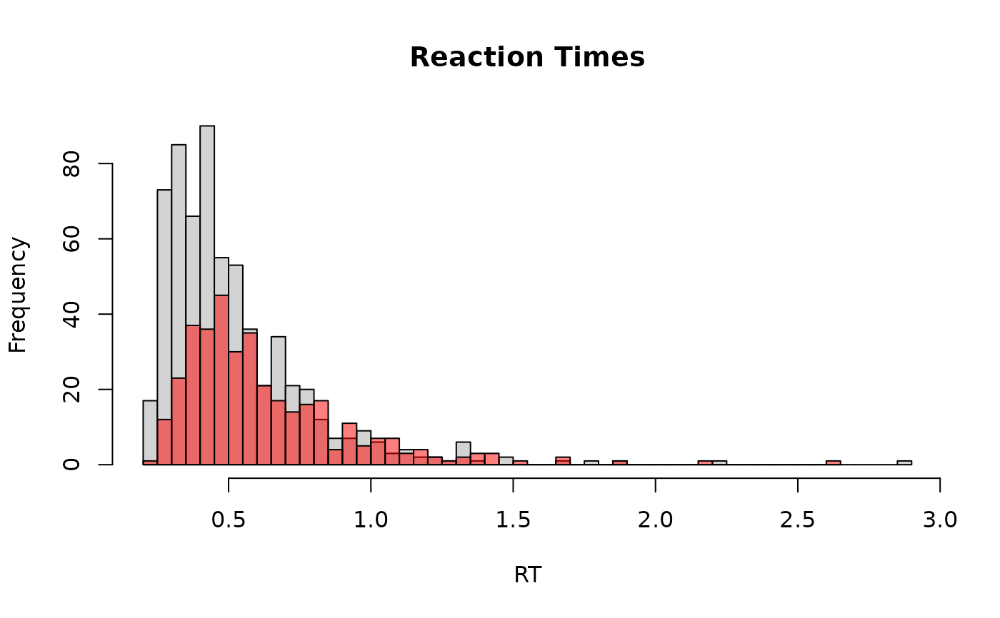

The Log-Normal Race (LNR) model is useful for modeling reaction times and choices in decision-making tasks. The model assumes that each choice option (accumulator) draws a processing time from a LogNormal distribution. The winning accumulator (minimum draw) determines the observed reaction time and choice. The observed RT includes a non-decision time component (ndt).
Functions:
rlnr(): Simulates random draws from the LNR model.dlnr(): Computes the likelihood/density of observed reaction times under the LNR model.lnr(): Creates a custom family to be used withbrms.lnr_stanvars(): Forbrms, generates astanvarsobject to pass tobrm()when fitting the model.posterior_predict_lnr(): Forbrms, simulates predicted outcomes using sampled parameters.log_lik_lnr(): Forbrms, computes the log-likelihood of observed data.
Usage
rlnr(n, nuzero = 0, nuone = 0, sigmazero = 1, sigmaone = 1, ndt = 0.2)
dlnr(x, nuzero, nuone, sigmazero, sigmaone, ndt, response, log = FALSE)
lnr_lpdf_expose()
lnr_stanvars()
lnr(
link_nuzero = "identity",
link_nuone = "identity",
link_sigmazero = "softplus",
link_sigmaone = "softplus",
link_tau = "logit",
link_minrt = "identity"
)
log_lik_lnr(i, prep)
posterior_predict_lnr(i, prep, ...)
posterior_epred_lnr(prep)Arguments
- n
Number of simulated trials. Must be a positive integer.
- nuzero, nuone
The (inverse of the) log-space mean parameter for both accumulators (choice 0 and 1). Controls the central tendency of the reaction time. Can take any real value (-Inf, Inf), with larger values leading to faster RTs. Named 'nu' (=-meanlog) for consistency with other race models.
- sigmazero, sigmaone
The log-space standard deviation for both accumulators (choice 0 and 1) Controls the variability of reaction times. Must be positive (0, Inf). Larger values increase variability.
- ndt
Non-decision time (shift parameter). Represents the time taken for processes unrelated to the decision (e.g., encoding, motor response). Must be non-negative [0, Inf).
- x
The observed reaction time (RT). Must be greater than
ndt.- response
The decision indicator (0 or 1). 0 for choice 0, 1 for choice 1.
- log
Logical; if TRUE, returns the log-density. Default: FALSE.
- link_nuzero, link_nuone
Link function for the nu parameters.
- link_sigmazero, link_sigmaone
Link function for the sigma parameters.
- link_tau
Link function for the tau parameter (non-decision time proportion).
- link_minrt
Link function for the minrt parameter (minimum RT scale).
- i, prep
For brms' functions to run: index of the observation and a
brmspreparation object.- ...
Additional arguments.
Details
The LNR model conceptualizes decision-making as a race between two independent accumulators,
each corresponding to a potential choice. Each accumulator's finishing time is drawn from a
LogNormal distribution. The underlying meanlog parameter for the LogNormal distribution
for accumulator 0 is -nuzero, and for accumulator 1 is -nuone. The sdlog parameters
are sigmazero and sigmaone respectively.
The first accumulator to finish determines the choice and the decision time.
The observed reaction time (RT) is the decision time plus the non-decision time (ndt).
Higher values of nuzero or nuone correspond to faster processing speeds and thus
shorter reaction times for the respective accumulator.
References
Rouder, J. N., Province, J. M., Morey, R. D., Gomez, P., & Heathcote, A. (2015). The lognormal race: A cognitive-process model of choice and latency with desirable psychometric properties. Psychometrika, 80(2), 491-513.
Examples
# Simulate data
data <- rlnr(1000, nuzero = 1, nuone = 0.5, sigmazero = 1, sigmaone = 0.8, ndt = 0.2)
hist(data[data$response == 0, "rt"], breaks = 50, main = "Reaction Times", xlab = "RT")
hist(data[data$response == 1, "rt"], breaks = 50, add = TRUE, col = rgb(1, 0, 0, 0.5))

if (FALSE) { # \dontrun{
# You can expose the lpdf function as follows:
insight::check_if_installed("cmdstanr")
lnr_lpdf <- lnr_lpdf_expose()
# Example call with nu parameterization (higher nu = faster)
lnr_lpdf(Y = 0.5, mu = 0.5, nuone = 0.2, sigmazero = 1.0, sigmaone = 0.8,
tau = 0.4, minrt = 0.2, dec = 0) # ndt = 0.4 * 0.2 = 0.08
} # }